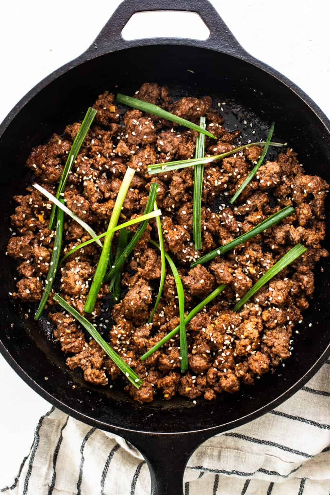

Korean Ground Beef
Home

Recipe Description
So simple yet so good, this Korean Ground Beef is a delight for the taste buds.
Lean ground beef simmers in a flavorful sauce made with asian ingredients.
Ingredients
- 1/4 cup soy sauce
- 2 tablespoons rice vinegar
- 1 tablespoon sesame oil
- 3 cloves minced garlic
- 2 teaspoons light brown sugar
- 1/8 teaspoon fish sauce
- 1 teaspoon gochujang
- 1 tablespoon fresh grated ginger
- 1 pound ground beef
- 1 teaspoon corn starch
- 2 teaspoons sesame seeds
- 1 chopped green onion
Instructions
-
Whisk together the soy sauce, rice vinegar, sesame oil, garlic, brown sugar, fish sauce, gochujang, and ginger in a separate bowl.
Set aside.
-
Heat a large skillet over medium/high heat.
Add the ground beef and cook until almost fully cooked, 4-6 minutes.
-
Pour the soy sauce mixture over the beef and reduce the heat.
Simmer for 3-4 minutes.
-
When the beef is cooked, move the beef to one side of the skillet and the sauce to the other.
Sprinkle the cornstarch into the sauce and whisk vigorously until the cornstarch dissolves.
Stir the sauce and beef back together and gently simmer over medium heat until the sauce thickens.
-
Remove from the heat and top with sesame seeds and green onions.
-
Serve alongside white rice.